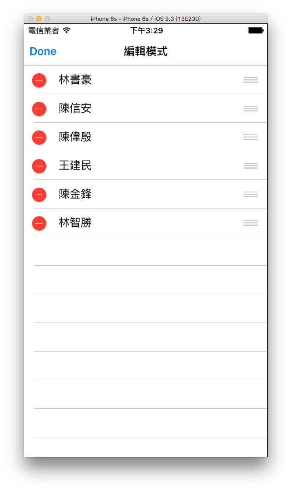

UITableView 的編輯模式
在稍前表格 UITableView 章節已經介紹過基本的使用方式，其實 UITableView 提供的功能非常多，這小節會介紹另一個也是常使用到的編輯模式。
以下是本小節目標： 
首先在 Xcode 裡，新建一個 Single View Application 類型的專案，取名為 ExEditUITableView 。
並為ViewController建立兩個屬性以供後續使用：
class ViewController: UIViewController {
var myTableView :UITableView!
var info =
["林書豪","陳信安","陳偉殷","王建民","陳金鋒","林智勝"]
// 省略
}
為了方便設置切換 UITableView 編輯模式的按鈕，這邊先在 AppDelegate.swift 設置 導覽控制器 UINavigationController，後續便可在導覽列左右設置按鈕。
首先在 viewDidLoad() 中設置基本設定、 UITableView 及導覽列按鈕：
// 基本設定
let fullsize = UIScreen.main.bounds.size
self.view.backgroundColor = UIColor.white
self.title = "編輯模式"
self.navigationController!.navigationBar.isTranslucent = false
// 建立 UITableView
myTableView = UITableView(frame: CGRect(
x: 0, y: 0,
width: fullsize.width,
height: fullsize.height - 64),
style: .plain)
myTableView.register(
UITableViewCell.self, forCellReuseIdentifier: "Cell")
myTableView.delegate = self
myTableView.dataSource = self
myTableView.allowsSelection = true
self.view.addSubview(myTableView)
// 導覽列左邊及右邊按鈕 編輯 & 新增
myTableView.setEditing(true, animated: false)
self.editBtnAction()
上述將導覽列按鈕另外設置在一個方法editBtnAction()中，以供切換編輯模式時可以一併變動。
切換編輯模式
按下編輯按鈕來切換編輯模式，如下：
// 按下編輯按鈕時執行動作的方法
@objc func editBtnAction() {
myTableView.setEditing(
!myTableView.isEditing, animated: true)
if (!myTableView.isEditing) {
// 顯示編輯按鈕
self.navigationItem.leftBarButtonItem =
UIBarButtonItem(
barButtonSystemItem: .edit,
target: self,
action: #selector(ViewController.editBtnAction))
// 顯示新增按鈕
self.navigationItem.rightBarButtonItem =
UIBarButtonItem(
barButtonSystemItem: .add,
target: self,
action: #selector(ViewController.addBtnAction))
} else {
// 顯示編輯完成按鈕
self.navigationItem.leftBarButtonItem =
UIBarButtonItem(
barButtonSystemItem: .done,
target: self,
action: #selector(ViewController.editBtnAction))
// 隱藏新增按鈕
self.navigationItem.rightBarButtonItem = nil
}
}
上述程式根據 UITableView 的屬性isEditing來判斷目前是否處於編輯模式，並使用方法setEditing(_:animated:)來切換。切換的同時也一併設置新的左右兩邊的按鈕，只有非編輯模式時才有新增的按鈕。
要設置每筆 row 是否可以進入編輯模式，必須實作以下這個委任方法：
// 各 cell 是否可以進入編輯狀態 及 左滑刪除
func tableView(
_ tableView: UITableView,
canEditRowAt indexPath: IndexPath) -> Bool {
return true
}
上述程式是設置為所有 cell 都可以編輯，你也可以根據 indexPath 來讓特定的 section 的 row 不能編輯。
新增一筆資料
在非編輯模式時，可以按導覽列右邊按鈕新增一筆資料，如下：
// 按下新增按鈕時執行動作的方法
@objc func addBtnAction() {
print("新增一筆資料")
info.insert("new row", at: 0)
// 新增 cell 在第一筆 row
myTableView.beginUpdates()
myTableView.insertRows(
at: [IndexPath(row: 0, section: 0)], with: .fade)
myTableView.endUpdates()
}
上述程式先為示範的陣列新增一筆資料，再在 UITableView 的兩個方法beginUpdates()與endUpdates()中間使用方法insertRows(at:with:)新增一筆資料到 UITableView 視圖中。
排序切換位置
必須實作下面這個委任方法，才會出現排序功能：
// 編輯狀態時 拖曳切換 cell 位置後執行動作的方法
// (必須實作這個方法才會出現排序功能)
func tableView(
_ tableView: UITableView,
moveRowAt sourceIndexPath: IndexPath,
to destinationIndexPath: IndexPath) {
print("\(sourceIndexPath.row) to \(destinationIndexPath.row)")
var tempArr:[String] = []
if(sourceIndexPath.row > destinationIndexPath.row) {
// 排在後的往前移動
for (index, value) in info.enumerated() {
if index < destinationIndexPath.row
|| index > sourceIndexPath.row {
tempArr.append(value)
} else if index == destinationIndexPath.row {
tempArr.append(info[sourceIndexPath.row])
} else if index <= sourceIndexPath.row {
tempArr.append(info[index - 1])
}
}
} else if (sourceIndexPath.row < destinationIndexPath.row) {
// 排在前的往後移動
for (index, value) in info.enumerated() {
if index < sourceIndexPath.row
|| index > destinationIndexPath.row {
tempArr.append(value)
} else if index < destinationIndexPath.row {
tempArr.append(info[index + 1])
} else if index == destinationIndexPath.row {
tempArr.append(info[sourceIndexPath.row])
}
}
} else {
tempArr = info
}
info = tempArr
print(info)
}
上述程式除了重新排序 UITableView 之外，也必須將示範的陣列重新排序。
刪除資料
編輯模式下刪除或是左滑刪除時，會執行以下方法：
// 編輯狀態時 按下刪除 cell 後執行動作的方法
// (另外必須實作這個方法才會出現左滑刪除功能)
func tableView(
_ tableView: UITableView,
commit editingStyle: UITableViewCellEditingStyle,
forRowAt indexPath: IndexPath) {
let name = info[indexPath.row]
if editingStyle == .delete {
info.remove(at: indexPath.row)
tableView.beginUpdates()
tableView.deleteRows(at: [indexPath], with: .fade)
tableView.endUpdates()
print("刪除的是 \(name)")
}
}
除了刪除 UITableView 的資料外，也必須刪除示範陣列所屬的值。
以上即為本小節的示範內容。
範例
本小節範例程式碼放在 apps/todo